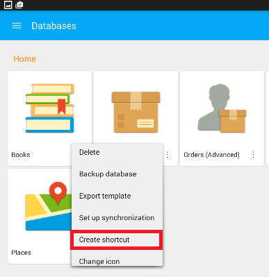
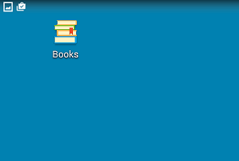
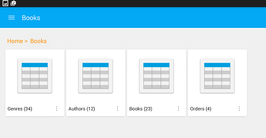
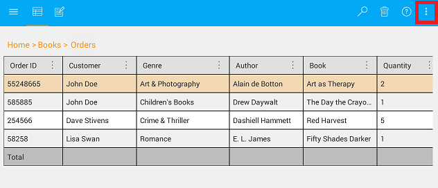
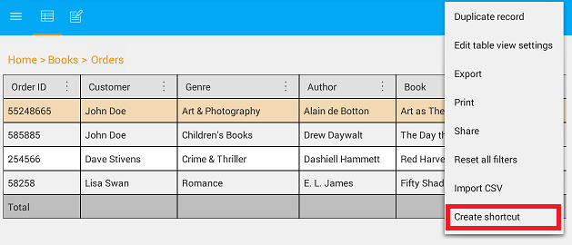
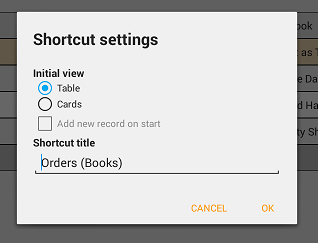
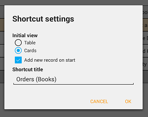
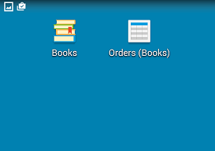
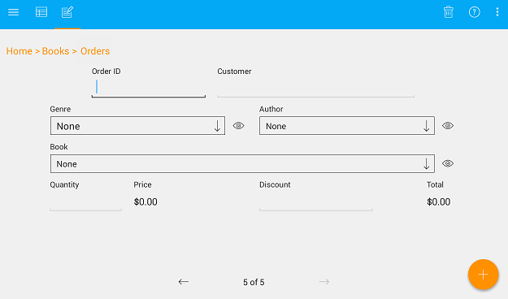

Shortcut creation
To quickly access the database or database tables the shortcut links can be used.
Creating a shortcut to the database
a) Open the MobiDB database list menu and tap on the context menu icon of the database.

b) Select 'Create shortcut' from the list of available options.

c) The shortcut icon will be created and placed on the device main screen.

d) Tap on the shortcut icon to quickly access the database tables.

Creating a shortcut to the database table
a) Open the database table and tap on the database menu icon.

b) Select 'Create shortcut' from the list of available options.

c) On the appeared 'Shortcut settings' window, select the preferred initial view, and set the shortcut title.

d) In case the 'Cards' view is selected, it becomes possible to specify the option to add a new record to the database table while opening it using a shortcut. When done, press 'OK' to confirm the selection.

e) The table shortcut icon will be created and placed on the device main screen.

f) Tap on the table shortcut icon to quickly access the database table record.
